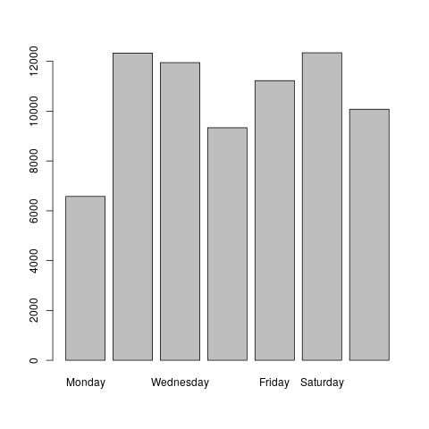

Analysis of electric vehicle usage patterns in New Zealand
Rafferty Parker (University of Otago)
Last run at: 2019-01-16 13:47:58
1 Introduction
New Zealand’s total electricity demand varies throughout the day, with two distinct “peaks”; one in the morning, and one in the evening. Providing the electicity to meet these demand peaks is a costly and inefficient process. If poorly managed, the predicted increase in electric vehicles (EVs) may increase these daily peaks significantly, increasing the cost of electricity due to the requirement of expensive upgrades to the electricity grid[@stephenson_smart_2017].
Our results showed that… [when/where is the greatest amount of charging occurring? What is the power demand per vehicle/household/place of charging? What might this look like if 50% of households had an EV? What about if it matched current ICE ownership (eventually)?]
2 Background
The New Zealand government has set a target of increasing the number of EVs in New Zealand to 64,000 by 2021. High penetration of EVs would cause EV recharging to contribute a substantial potion of total electricity load. A report prepared for lines companies Orion, Powerco and Unison by Concept Consulting Group entitled “Driving change - Issues and options to maximise the opportunities from large-scale electric vehicle uptake in New Zealand” predicts that if all current light private vehicles were electric, annual residential electricity consumption would increase by approximately 30%, whereas if all vehicles including trucks were electric, this would increase the total electricity consumption of New Zealand by approximately 41%[concept_2018]. Concurrent charging, especially in the early evening when many motorists return home, would have the potential to negatively impact the operation of the grid through drastically increasing peak loads [Azadfar2015].
The Concept Consulting report considers different methods of EV charging. The assumption that most drivers would begin charging immediately after returning home is referred to as “passive” charging, while charging that is programmed (either by the driver or by an external entity) to occur during off-peak periods is referred to as “smart”. The key findings of the report are as follows.
Under a scenario whereby 57% of the current private vehicle fleet were EVs (corresponding to one EV per household): * If all were charged in a passive fashion, New Zealand’s peak electricity demand would increase by appproximately 3,000MW * If all were charged in a “smart” fashion, there would be no increase in peak demand
This report extends the work done by Concept Consulting, but utilises actual data collected from electric vehicles, as opposed to using models based on current usage patterns of internal combustion engine (ICE) vehicles.
This is an example of a bibtex reference to a paper: [@stephenson_smart_2017]
This is an example of a reference to an R package: [@dplyr]
3 Research questions
Need to find: * The median average energy supplied by domestic charging events Compare with UK findings og was 7.5 kWh. If NZ findings are higher, it may be due to UK having more plug-in hybrids. * The mean average energy supplied Compare with UK findings of 9.1 kWh. * Charging duration time each day of week * Time of day that charging begins by day of week * Plot time of day charging begins and time of day charging ends (weekend/weekday?) * Plot average energy supplied by hour of start time (fast/slow charging) * plot average duration of plug-in by hour of start time (fast/slow charging) * Average energy use per vehicle per month * Average number of charging events per vehicle per day for each day of week * Average number of events per vehicle per w eek * Median/mean amount of energy supplied per day of week (may not be easy to exactly determine)
4 Methods
4.1 Data
Describe it:
The data used has been provided by “Flip the Fleet”, a community organisation that hopes to increase uptake of electric vehicles in New Zealand. Flip the Fleet have been collecting data on electric vehicle usage patterns, collected using Exact IOT Limited’s “Black Box”, a small electronic device that connects to the vehicle’s internal computer and sends detailed data about the battery health, consumption, speed, etc.
The data has been anonymised through the hashing of license plate numbers and dates.
Charging data has been broadly seperated into two seperate catagories, “slow” and “fast”. Slow charging is when the charger is reading less than 7kW - this is considered the upper limit of what can be obtained from a standard home charging scenario without an expensive wiring upgrade. Fast charging is all charging above 7kW, and would likely occur at designated and purpose-built fast charging stations.
Grid peaks are more pronounced during weekdays. Because of this, the data was also catagorised according to whether it was a weekday or not. This allows analysis to occur of differing charging patterns between weekdays and weekends, allowing for further accuracy in determining the effects of grid peaks.
- where did you get it?
- how many vehicles, where are they and what kinds?
- anything we need to know about the data?
- what did you have to do to it (cleaning etc)
- descriptive analysis, e.g.:
- Plot all charging with fast and slow charges differentiated
- Plot fast charges with weekend and weekday differentiated
- Histograms of power (kW)
Load the data - note the feedback readr gives you on the assumed format of the columns. You might not want to remove the original dateTime :-)
df <- readr::read_csv(dFile)## Parsed with column specification:
## cols(
## id = col_character(),
## dayid = col_character(),
## month = col_character(),
## day_of_week = col_character(),
## time = col_time(format = ""),
## fractime = col_double(),
## charge_power_kw = col_double(),
## state_of_charge_percent = col_double(),
## odometer_km = col_double(),
## location = col_logical()
## )This is a cross-references to Table 4.1.
t <- summary(df)
knitr::kable(t, caption = "Data summary") # <- makes a pretty table| id | dayid | month | day_of_week | time | fractime | charge_power_kw | state_of_charge_percent | odometer_km | location | |
|---|---|---|---|---|---|---|---|---|---|---|
| Length:73836 | Length:73836 | Length:73836 | Length:73836 | Length:73836 | Min. : 0.000 | Min. : 0.000 | Min. : 0.00 | Min. : 0 | Mode:logical | |
| Class :character | Class :character | Class :character | Class :character | Class1:hms | 1st Qu.: 6.027 | 1st Qu.: 0.000 | 1st Qu.: 55.54 | 1st Qu.:1385 | NA’s:73836 | |
| Mode :character | Mode :character | Mode :character | Mode :character | Class2:difftime | Median :13.528 | Median : 2.772 | Median : 69.83 | Median :2716 | NA | |
| NA | NA | NA | NA | Mode :numeric | Mean :12.676 | Mean : 2.149 | Mean : 68.54 | Mean :3116 | NA | |
| NA | NA | NA | NA | NA | 3rd Qu.:18.178 | 3rd Qu.: 3.025 | 3rd Qu.: 83.19 | 3rd Qu.:4435 | NA | |
| NA | NA | NA | NA | NA | Max. :23.999 | Max. :49.354 | Max. :1677.72 | Max. :8254 | NA | |
| NA | NA | NA | NA | NA | NA | NA | NA | NA’s :53206 | NA |
df$day_of_week <- factor(df$day_of_week, ordered = TRUE,
levels = c("Monday", "Tuesday", "Wednesday","Thursday",
"Friday", "Saturday", "Sunday"))
df$month <- factor(df$month, ordered = TRUE, levels = c("Jan", "Feb", "Mar", "Apr", "May",
"Jun", "Jul", "Aug", "Sep", "Oct",
"Nov", "Dec"))
weekdays1 <- c("Monday", "Tuesday", "Wednesday", "Thursday", "Friday")
df$weekday <- factor((df$day_of_week %in% weekdays1),
levels = c(TRUE, FALSE), labels = c('Weekday', 'Weekend'), ordered = TRUE)
df$charging_rate <- cut(df$charge_power_kw, c(-Inf, 0.01, 7, Inf), labels = c('None', 'Slow', 'Fast'))# code to half (or quarter) hours, removing seconds from formatting
df$halfHour <- format(as.POSIXct(hms::trunc_hms(df$time, 30*60)), "%H:%M")
df$quarterHour <- format(as.POSIXct(hms::trunc_hms(df$time, 15*60)), "%H:%M")df$id <- factor(df$id, ordered = TRUE)
levSeq <- seq(1:length(levels(df$id)))
levSeqChar <- as.character(levSeq)
df$id <- factor(df$id,
labels = levSeqChar)
df$id <- as.character(df$id)
df$id <- paste("Vehicle", df$id, sep = " ")
# It *might* be useful to do a similar thing with dayid, however it appears there is a seperate dayid per car per day (not same for different cars on same day)
# This would be unnecessary if I get a proper datetime stampdf$state_of_charge_percent[df$state_of_charge_percent > 100] <- NA
df$state_of_charge_percent[df$state_of_charge_percent < 0] <- NAThe following dataframe “chargeBegins” is constructed out of all the instances where charging becomes non-zero after previously being zero, hopefully capturing the moment the car is initially plugged in. Data is also excluded where charging has stopped due to the car being fully charged and then starts again briefly, charging is turned off or on, etc. Extra lag of 2 was provided due to some instances where there was only one minute where charging occurred, presumably due to regenerative braking. This should be useful for establishing average state of charge when arriving home. Similarly, “chargeEnds” hopefully captures the time at which the vehicle becomes fully charged. Note that the discrepency between the number of “charge begins” events and “charge ends” events indicated that there may be a better way of defining these.
chargeBegins <- filter(df, charge_power_kw > 0.1 & lag(charge_power_kw) < 0.1 &
lag(charge_power_kw, 2) < 0.1)
chargeBegins <- filter(chargeBegins, state_of_charge_percent < 97)
chargeEnds <- filter(df, charge_power_kw > 0.1 & lead(charge_power_kw) < 0.1 & lead(charge_power_kw, 2) < 0.1)
chargeEnds <- filter(chargeEnds, state_of_charge_percent < 97)
# Not sure why there are so many more instances of charge beginning than charge endingdayCount <- table(df$day_of_week)
png(filename="~/EVBB/plots/day_count.png")
barplot(dayCount)
dev.off()## png
## 2 The above figure demonstrates that that for the current data set there is a disparity in the number of data points for each day, making analysis of averages etc difficult.
#Mean and median kW demand per day by day of the week (Bar charts, one for fast charging one for slow)# This entire block is garbage, will probably need deleting
# perhaps best way to do this:
# create factor where all zero charge values are NC, all non-zero are MC
# then create factors for BC and EC using filter method from previous block
# to overwrite beginning and end MC values
#df$charge_factor <- cut(df$charge_power_kw, c(-Inf, 0.01, Inf), labels = c('NC', 'MC'))
#chargeBegins <- filter(df, charge_power_kw > 0 & lag(charge_power_kw) == 0
# & lag(charge_power_kw, 2) == 0)
#chargeBegins <- filter(chargeBegins, state_of_charge_percent < 97)
#chargeEnds <- filter(df, charge_power_kw < 0.1 & lag(charge_power_kw) > 1)
#if (df$charge_power_kw > 0.1 & lag(df$charge_power_kw) < 0.1){
# df$charge_factor <- "BC"
#} else if (df$charge_power_kw > 0.1 & lead(df$charge_power_kw) < 0.1){
# df$charge_factor <- "EC"}
#if (df$charge_power_kw < 0.1){
# df$charge_factor <- "NC"
#} else if (df$charge_power_kw > 0.1 & lag(df$charge_power_kw) < 0.1){
# df$charge_factor <- "BC"
#} else if (df$charge_power_kw > 0.1 & lead(df$charge_power_kw) < 0.1){
# df$charge_factor <- "EC"
# else
# df$charge_factor <- "MC"
#df$charge_factors <- filter(df)# As timestanp scrambled we would need to work out average per day and then times this by 365/12 to get monthly averagep <- ggplot(data=chargeBegins, aes(chargeBegins$state_of_charge_percent)) + geom_histogram(bins = 10)
p + labs(x = "State of charge when charging begins (%)")
startCount <- table(chargeBegins$day_of_week)
barplot(startCount, main="Charging start times")
endCount <- table(chargeEnds$day_of_week)
barplot(endCount, main = "Charging end times")
# NOTE I am very skeptical of these, I think the previous block (that constructs chargeBegins/Ends) needs improving upon
# Also the "count" on the y axis is pretty meaningless, perhaps it would be good to (for example) divide by number of vehicles and then perhaps number of months, then change the title to " Monthly average charging start times". Alternatively just remove the numbers.Figure 4.1 implies that most charging is “slow”.
p <- ggplot2::ggplot(df, aes(x = charge_power_kw)) +
guides(colour = guide_legend(title = "Vehicle:")) +
theme(legend.position="bottom") +
scale_colour_manual(values=cbPalette) + # use colour-blind friendly palette
geom_density() # <- make the plot in an object first
p + labs(x = "Power (kW)") + facet_grid(id ~ .) +
annotate("rect", xmin = 0, xmax = 7, ymin = 0, ymax = 1.5,
alpha = .1, fill="yellow") +
annotate("rect", xmin = 7, xmax = 50, ymin = 0, ymax = 1.5,
alpha = .1, fill="blue") +
annotate("text",label="Slow", x=3.5, y=1.25, angle=0) +
annotate("text",label="Fast", x=(50-7)/2 + 7, y=1.25, angle=0)Figure 4.1: Density plot of charging power by car
# Not sure the annotations are really necessary but will leave them for now
# Also probably don't need two different colours for each car
# Need to alter settings so that fast charges are visible4.2 Analysis
Analysis was conducted using R (R version 3.4.4 (2018-03-15)) and the following packages:
- ggplot2 [@ggplot2]
- dplyr [@dplyr]
Reports were developed using knitr [@knitr] within bookdown [@bookdown].
5 Charging Analysis
5.1 Research question 1
When does charging happen?
This is a cross-reference to Figure 5.1. Time is coded to half hours.
p <- ggplot2::ggplot(df, aes(x = halfHour, group = halfHour, y = charge_power_kw)) +
guides(colour = guide_legend(title = "Vehicle:")) +
theme(legend.position = "bottom", axis.text.x = element_text(angle = 90)) +
scale_colour_manual(values=cbPalette) + # use colour-blind friendly palette
geom_boxplot() # <- make the plot in an object first
p + labs(x = "Time of Day", y = "Power (kW)") + facet_grid(day_of_week ~ id)Figure 5.1: Boxplot of charging timing by car
p <- ggplot2::ggplot(df, aes(x = halfHour, group = halfHour, y = charge_power_kw)) +
guides(colour = guide_legend(title = "Vehicle:")) +
theme(legend.position = "bottom", axis.text.x = element_text(angle = 90)) +
scale_colour_manual(values=cbPalette) + # use colour-blind friendly palette
geom_boxplot() # <- make the plot in an object first
p + labs(x = "Time of Day", y = "Power (kW)") + facet_grid(day_of_week ~ charging_rate)Figure 5.2: Boxplot of charging timing by charge rate
# let the rhs panel have a free y axis to see the patterns - as they are scaled down by the magnitude of the fast charging. p <- ggplot2::ggplot(df %>% filter(charging_rate == "Fast"), aes(x = halfHour, group = halfHour, y = charge_power_kw)) +
guides(colour = guide_legend(title = "Vehicle:")) +
theme(legend.position = "bottom", axis.text.x = element_text(angle = 90)) +
scale_colour_manual(values=cbPalette) + # use colour-blind friendly palette
geom_boxplot() +
facet_grid(~day_of_week)
p + labs(x = "Time of Day", y = "Power (kW)")Figure 5.3: Boxplot of daily fast charging
ggsave("~/EVBB/plots/daily_fast_charging.png")## Saving 7 x 5 in image# poor scaling p <- ggplot2::ggplot(df %>% filter(charging_rate == "Slow"),
aes(x = halfHour, group = halfHour, y = charge_power_kw)) +
guides(colour = guide_legend(title = "Vehicle:")) +
theme(legend.position = "bottom", axis.text.x = element_text(angle = 90)) +
scale_colour_manual(values=cbPalette) + # use colour-blind friendly palette
geom_boxplot() +
facet_grid(~day_of_week)
p + labs(x = "Time of Day", y = "Power (kW)") + coord_flip()Figure 5.4: Boxplot of daily slow charging
# Not sure the coord_flip is beneficial
ggsave("~/EVBB/plots/daily_slow_charging.png")## Saving 7 x 5 in imagep <- ggplot2::ggplot(df %>% filter(charging_rate == "Slow"), aes(x = halfHour, group = halfHour, y = charge_power_kw)) +
guides(colour = guide_legend(title = "Vehicle:")) +
theme(legend.position = "bottom", axis.text.x = element_text(angle = 90)) +
scale_colour_manual(values=cbPalette) + # use colour-blind friendly palette
geom_boxplot() +
facet_grid(~weekday)
p + labs(x = "Time of Day", y = "Power (kW)")Figure 5.5: Boxplot of weekday/weekend slow charging
ggsave("~/EVBB/plots/weekday_weekend_slow_charging.png")## Saving 7 x 5 in imagep <- ggplot2::ggplot(df %>% filter(charging_rate == "Fast"), aes(x = halfHour, group = halfHour, y = charge_power_kw)) +
guides(colour = guide_legend(title = "Vehicle:")) +
theme(legend.position = "bottom", axis.text.x = element_text(angle = 90)) +
scale_colour_manual(values=cbPalette) + # use colour-blind friendly palette
geom_boxplot() +
facet_grid(~weekday)
p + labs(x = "Time of Day", y = "Power (kW)")Figure 5.6: Boxplot of weekday/weekend fast charging
ggsave("~/EVBB/plots/weekday_weekend_fast_charging.png")## Saving 7 x 5 in image# Not obvious that no overnight charging occurringp <- ggplot2::ggplot(df, aes(x = halfHour, group = halfHour, y = charge_power_kw)) +
guides(colour = guide_legend(title = "Vehicle:")) +
scale_colour_manual(values=cbPalette) + # use colour-blind friendly palette
geom_boxplot() +
stat_summary(aes(group = weekday), fun.y=mean, geom="line", colour = "red") +
coord_cartesian(xlim = c(0,24),ylim=c(0,15))
p + labs(x = "Time of Day", y = "Power (kW)") + facet_grid(~weekday) + theme(legend.position = "bottom", axis.text.x = element_text(angle = 90)) Figure 5.7: Weekend and weekday charging patterns
# might need to split by location as this would tell us a) about slow charge by default and b) about home vs non-home LV network impactsp <- ggplot(df %>% filter(charging_rate == "Fast"), aes(x = charge_power_kw)) +
guides(colour = guide_legend(title = "Vehicle:")) +
scale_colour_manual(values=cbPalette) + # use colour-blind friendly palette
geom_histogram()
p + labs(x = "Charging power (kW)", y = "Frequency of occurrence") + facet_wrap(~weekday) ## `stat_bin()` using `bins = 30`. Pick better value with `binwidth`.
p <- ggplot(df %>% filter(charging_rate == "Slow") , aes(x = halfHour, y = charging_rate)) +
theme(axis.text.x = element_text(angle = 90)) +
geom_bar(stat = "identity")
p + labs(x = "Time of day (hours)", y = "Frequency of slow charging events") +
facet_wrap(~weekday) 
ggsave("~/EVBB/plots/frequency_of_slow_charging.png")## Saving 7 x 5 in imagep <- ggplot(df %>% filter(charging_rate == "Fast") , aes(x = halfHour, y = charging_rate)) +
facet_wrap(~weekday) +
theme(axis.text.x = element_text(angle = 90)) +
geom_bar(stat = "identity")
p + labs(x = "Time of day (hours)", y = "Frequency of fast charging events")
ggsave("~/EVBB/plots/frequency_of_fast_charging.png")## Saving 7 x 5 in image# stat_summary(aes(group = weekday), fun.y=mean, geom="line") +6 State of charge patterns
When analysing the potential for smart charging it is useful to understand daily patterns of the vehicle’s “state of charge”, in particular the percentage of energy left in the battery once the vehicle returns home. This is of particular significance when considering vehicle to grid (V2G) energy transfer. If there is a very high frequency whereby the driver only uses a particular percentage of the battery capacity in a day, there may be the ability to return electricity to the grid (or household) during grid congestion events or other occasions of very high electricity price, provided enough energy always remained in the battery for a typical day of travel.
Figure @ref(plot:charging density plot by vehicle) shows a box plot of state of charge during the day. (Note that the zero values may be false - there seem to be no values that approach zero)
p <- ggplot2::ggplot(df, aes(x = halfHour, group = halfHour, y = state_of_charge_percent)) +
guides(colour = guide_legend(title = "Vehicle:")) +
theme(legend.position = "bottom", axis.text.x = element_text(angle = 90)) +
scale_colour_manual(values=cbPalette) + # use colour-blind friendly palette
geom_boxplot() # <- make the plot in an object first
p + labs(x = "Time of day", y = "State of charge (%)")## Warning: Removed 1 rows containing non-finite values (stat_boxplot).
ggsave("~/EVBB/plots/SOC_when_charging_begins.png")## Saving 7 x 5 in image## Warning: Removed 1 rows containing non-finite values (stat_boxplot).7 Density plot of half-hour values (see when data is being collected)
p <- ggplot2::ggplot(df, aes(x = halfHour, group = halfHour, y = state_of_charge_percent)) +
guides(colour = guide_legend(title = "Vehicle:")) +
scale_colour_manual(values=cbPalette) + # use colour-blind friendly palette
geom_boxplot() +
stat_summary(aes(group = weekday), fun.y=mean, geom="line", colour = "red")
p + labs(x = "Time of Day", y = "State of charge (%)") + facet_grid(~weekday) + theme(legend.position = "bottom", axis.text.x = element_text(angle = 90)) ## Warning: Removed 1 rows containing non-finite values (stat_boxplot).## Warning: Removed 1 rows containing non-finite values (stat_summary).
Need to get average SOC when charging begins. To do this, we will select all data whereby the charging rate is non-zero, but the previous charge rate is zero
7.1 Research question 2
How might this affect the NZ electricity grid?